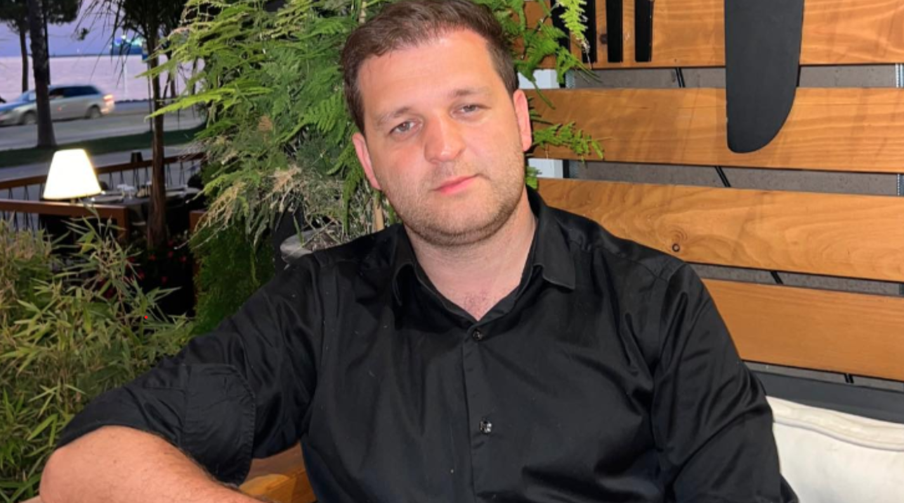

<!DOCTYPE html>
<html lang="en">

<head>
    <meta charset="UTF-8">
    <meta name="viewport" content="width=device-width, initial-scale=1.0">
    <title>Fjalët e Naim Murselit në gjykatë: Nuk kam ikur nga vendi i ngjarjes, kam qenë edhe unë i rrezikuar
    <link rel="stylesheet" href="Stilizimi.css">
    <link rel="stylesheet" href="https://cdnjs.cloudflare.com/ajax/libs/font-awesome/6.5.1/css/all.min.css" integrity="sha512-DTOQO9RWCH3ppGqcWaEA1BIZOC6xxalwEsw9c2QQeAIftl+Vegovlnee1c9QX4TctnWMn13TZye+giMm8e2LwA==" crossorigin="anonymous" referrerpolicy="no-referrer" />
    <link rel="preconnect" href="https://fonts.googleapis.com">
    <link rel="preconnect" href="https://fonts.gstatic.com" crossorigin>
    <link href="https://fonts.googleapis.com/css2?family=Poppins:wght@200;300;400;500;600&display=swap"
        rel="stylesheet">
</head>

<body>
    <main class="NewsPage">
        <div class="title">
            <h1>
                Fjalët e Naim Murselit në gjykatë: Nuk kam ikur nga vendi i ngjarjes, kam qenë edhe unë i rrezikuar
            </h1>
        </div>
        <div class="image">
            
        </div>
        <div>
            <h3>
                Gjykata Themelore në Prishtinë sot ka caktuar masën e paraburgimit për një muaj ndaj Naim Murselit, 
                Granit Plavës dhe Kushtrim Kokallës lidhur me dyshimet për vrasjen e Liridona Ademaj.
            </h3>
            <p>
                Nga vendimi i gjykatës mësohet se Naim Murseli po dyshohet për vrasje të rëndë në bashkëkryerje,
                 ndërkaq bashkëvendasi i tij, Granit Plava për vrasje të rëndë.
            <p>
                Kurse i dyshuar i tretë që mori pjesë në këtë akt makabër, dyshohet për për marrëveshje për të kryer
                 veprën penale vrasja e rëndë, shkruan Sinjali.
            </p>
            <p>
                Seanca lidhur me shqyrtimin e kërkesës së Prokurorisë për paraburgim u mbajt sot ku u deklarua edhe i 
                dyshuari Murseli dhe avokati i tij Ahmet Ahmeti.
            </p>
            <p>
                Murseli tha se ai nuk kishte ikur nga vendi i ngjarjes dhe kishte qenë vetë i rrezikuar.
            </p>
            <p>
                <i>
                    “Unë nuk kam ikur nga vendi i ngjarjes, madje kam qenë vetë i rrezikuar dhe kam kërkuar 
                    ndihmë në të njëjtën kohë deri në ardhjen e policisë”
                 </i>
                 – thuhet se ka thënë i dyshuari sipas vendimit të gjykatës.
                
            <p>
                Avokati Ahmet Ahmeti kishte thënë se Naim Murseli nuk e ka kryer
                 veprën penale në vend, kohë dhe mënyrë siç përshkruhet 
                në dosjen e prokurorisë dhe nuk është i përfshirë në vrasje.
            <p>
                <i>
                    “I mbrojturi im nuk është fare i involvuar në kryerjen e këtyre veprave penale dhe 
                    nuk ka arsyje të përsëris veprën penale se nuk e ka bë”
                </i> 
                – ka thënë avokati Ahmeti.
            </p>
            <p>
                Në bazë të kësaj Ahmeti kishte kërkuar nga gjykata që kërkesën për caktimin e paraburgimit
                 të mos e aprovojë, apo të caktojë një masë alternative.
            </p>
            <p>
                Vendimi për caktimin e paraburgimit është marrë nga
                 gjyqtarja e procedurës paraprake Sulltane Hoti.
            </p>
        </div>
    </main>
    <footer>
        <div class="FooterC">
            <div class="logot">
                <a href="#"><i class="fa-brands fa-facebook"></i></a>
                <a href="#"><i class="fa-brands fa-instagram"></i></a>
                <a href="#"><i class="fa-brands fa-twitter"></i></a>
                <a href="#"><i class="fa-brands fa-youtube"></i></a>
            </div>
            <div class="referencat">
                <ul>
                    <li><a href="">home</a></li>
                    <li><a href="">news</a></li>
                    <li><a href="">about us</a></li>
                    <li><a href="">contact us</a></li>
                    <li><a href="">our team</a></li>
                </ul>
            </div>
        </div>
        <div class="Copy">
            <p>Copyright ©2023; Designed by <strong>Leutrim & Ylldrit</strong> </p>
        </div>
    </footer>
    <script src="script.js"></script>
</body>

</html>